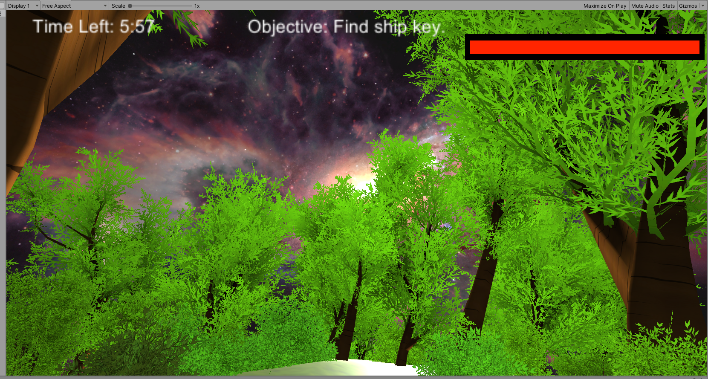
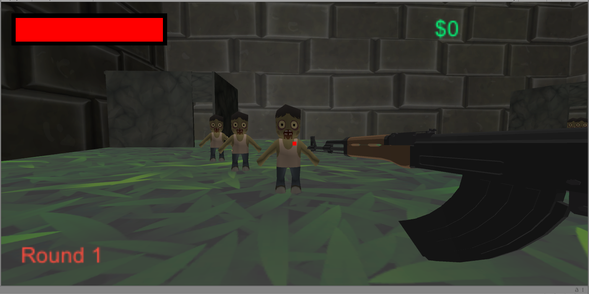

This project is a game I worked on over the winter of 2020. It was created with the Unity Engine and coded in C#. The goal of the game is to escape the planet you start on before time runs out or the meteors kill you. To escape you have to find the spaceship key which can spawn in random locations around the planet. Once you retrieve the key, you make your way back to the ship and take off. The reason I made this project specifically is because I believe it shows my skills, I am fascinated with space, and making games is one of my biggest passions.
This project is a game I worked on over the summer of 2020. It was created with the Unity Engine and coded in C#. The goal of the game is to survive as many rounds of zombies as you can. You are given a rifle, pistol, and knife as weapons to kill the zombies which spawn out of one of the two spawn areas. You are also able to upgrade your weapons by killing zombies who give u money and then spending it at the upgrade machine. The reason I made this project was to keep myself busy, teach myself several new skills, and create something my friends and I could play.
